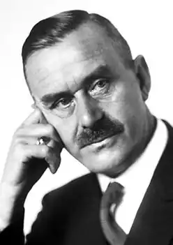

ТОМАС МАНН
(1875-1955)
Світову літературу XX століття неможливо уявити без великого німецького письменника Томаса Манна. Його кращі романи та новели належать до найвищих художніх досягнень. Критики, відзначаючи недостатню соціальну значимість його творів, писали, наприклад, що у більшості своїх романів ("Чарівна гора", "Йосип і його брати", "Доктор Фаустус") Томас Манн залишається в колі культурно-історичних і психологічних проблем. Філософським і естетичним спорам, що ведуть його герої, письменник прагне надати епічного розмаху, не зважаючи на те, що доля історії формується не тут, не в цьому вузькому світі, де люди не діють, а міркують. Але письменник щиро й чесно прагне розібратися в тому, що відбувається, він болісно шукає відповідей на животрепетні питання сучасності й у першу чергу на питання про долі культури. У цьому цінність його творчих пошуків". Томас Манн на такі критичні зауваження відповідав: "Соціальне — моя слабка сторона — я це знаю. Знаю я також, що це суперечить художньому жанрові роману, що вимагає соціального... Метафізичне для мене незрівнянно важливіше... адже роман про суспільство сам собою стає соціальним...". Метафізикою при цьому письменник називав аналіз духовних взаємин і духовних якостей людей. Так що його романи не були соціальними в сенсі критичного реалізму чи соціалістичного реалізму, але вони були соціальними по суті — так вони досліджували глибинні стосунки людей у цьому світі. Томас Манн ввійшов у літературу в ті часи, коли в ній переважав декадентський вплив, коли значне місце посіла антигуманістична проповідь Ніцше, коли оспівували смерть, тримали орієнтацію на реалізм і висували на перший план "чисте мистецтво". Найбільш модним словом було "модерн", тобто — сучасний, новий. Багато художників ішли від життя в цей світ нібито передового мистецтва і гинули назавжди для мистецтва щирого, глибокого й вічного. Треба було мати талант досить мужній, щоб не спокуситися, не втратити з свого пильного художницького зору реальну дійсність. Томас Манн народився 6 червня 1875 року в старовинній бюргерській родині. Популярність приніс Майнові вже перший роман "Будденброки" (т. 1-2, 1901) — велика оповідь про долю чотирьох поколінь любекського патриціанського роду. Підзаголовок роману — "Занепад однієї родини" — осмислюється як прояв деяких спільних біологічно-метафізичних закономірностей, але має і соціальну характеристику: несумісність духовно витончених людей із грубою, агресивною дійсністю Німеччини, що вступала в епоху імперіалізму. У більш широкому плані "Будденброки" говорять про загальний занепад буржуазного суспільства, пронизані почуттям вичерпаності колишніх форм життя. У "Будденброках" яскраво проявилася своєрідність Манна-художника: неквапливість і деталізованість описів, сполучення гостро аналітичного й іронічного початку з емоційною теплотою. У романі помітний вплив німецьких реалістів XIX століття, скандинавських і французьких письменників. Критики відзначають особливий зміст, вкладений письменником у поняття "бюргерство". Томас Манн багато писав про велику бюргерську культуру, говорив, що тепер особливо згубно на неї впливає масова культура Америки. Епоху імперіалізму він називав епохою кризи бюргерства. У контексті творів письменника слово "бюргерство" дуже близьке за значенням до слів "шляхетність" та "інтелігентність". Найяскравішим представником бюргерської культури Манн вважав великого Гете. Бюргерство породжується, на думку Манна, конкретними сприятливими історичними і навіть побутовими моментами, але сила його така, що негативними обставинами воно не знищується, лише може зникнути разом з загибеллю людства. Стихія бюргерства була всепоглинаючою людською і письменницькою пристрастю Томаса Манна. Його інтерес до психоаналізу, романтизму, навіть до мистецтва та музики, були окремішніми моментами на тлі його служіння бюргерству. Бюргерство — основна тема його творчості. І якщо часом у його творчості бюргер і художник вступали між собою в конфлікт, кінцева правда для Томаса Манна була на боці бюргера, справжньої інтелігентності. Саме в той рік, коли молодий автор писав перші свої новели (1894), він познайомився з творами Ніцше, і знайомство це виявилось дуже важливим і взагалі для його духовного розвитку, і зокрема для тематики й стилю ранніх його новел. Чим приваблювала юнака філософія Ніцше? Протестуючи проти брехливої моралі буржуазного суспільства та проти немічного, позбавленого значних ідей декадентського мистецтва, вона сама була махровою квіткою декадансу, отруйною, як показав досвід двадцятого століття, квіткою, що була позбавлена позитивної, цілісної ідеї, називаючи істину, справедливість усього лише втішливими ілюзіями людства, убачала єдине виправдання для життя, котре не визнає моралі і є безжалісним, утім, представляючи собою явище естетичне. Чим приваблювала філософія Ніцше? Протестом, але не тільки цим. Людині, котра побачила на прикладі своєї родини, що ланцюг бюргерських чеснот не такий уже й непорушний, імпонувала рішучість, з якою ця філософія протиставляла мораль і життя. А крім того, для юнака, уже, судячи з його перших новел, який зіштовхнувся з жорстокістю життя в сфері, що посідає у свідомості людей його віку особливо велике місце, одкровенням було саме це переконане протиставлення моральності ідеї вищої, безжалісної "правоти буття". Але любов молодого Томаса Манна до філософії Ніцше була, при всій її проникливості, любов'ю без довіри. "Я майже нічого не приймав у нього на віру,— писав він, згадуючи про ті часи,— і саме це надавало моїй любові до нього глибини". Зміст цього визнання, як ми побачимо згодом, яснішає при знайомстві з першими кроками Томаса Манна в літературі — новелами, написаними в дев'яностих роках, хоча імені Ніцше в цих новелах ми не знайдемо. Т. Манн відкрив себе ще раніше, ніж Ніцше, і це відіграло найважливішу роль у формуванні його уявлень про зразок художньої форми. До кращих творів Томаса Манна належать новели "Трістан" (1903), "Тоніо Крегер" (1903) та ін., у яких з великою психологічною глибиною змальовані взаємини людей мистецтва зі світом буржуазної практики, у них поєднується іронія з проникливою ліричністю. Приступаючи до роботи над оповіданням "Смерть у Венеції" в 1911 році, автор ще не знав, що воно буде підсумковою оцінкою нового, глибокого аналізу проблем. У 1924 році вийшов роман Томаса Манна "Чарівна гора", у ньому подана картина ідейного життя буржуазного суспільства в переддень Першої світової війни 1914-1918 років. Дія розгортається у високогірному швейцарському санаторії, куди потрапляє молодий інженер Ганс Касторп. Стикаючись з мешканцями санаторію, які втілюють різні сторони сучасної буржуазної свідомості, Ганс Касторп проходить ряд етапів внутрішнього розвитку, наближаючись до поглибленого гуманістичного розуміння світу. Йому не до вподоби декаданс і смерть, він з огидою відкидає фрейдизм. "Чарівна гора" — це місце, де раніше, ніж у низині, згустилася нова духовна атмосфера, центром якої стає Ганс. Роман "Чарівна гора" продовжує традиції німецького виховного роману, є також одним з найважливіших філософських романів XX століття. Для роману характерна "симфонічність" — своєрідний ритм розкриття і зміни тем, повернення до безлічі намічених мотивів. Роман завоював світове визнання. Він вважається одним із найбільш значних і складних творів німецької літератури XX століття. У 1929 році Майнові було присуджено Нобелівську премію. Уперше, до речі, його ім'я почали пов'язувати з Нобелівською премією після опублікування новели "Смерть у Венеції", напередодні Першої світової війни, коли більшість його творів цього жанру була вже написана. Усього написав він їх за своє життя близько трьох десятків, і ця збірка, що складається з восьми новел, охоплює, всього лише невелику їхню частину. Але якщо взагалі новели Томаса Манна можуть слугувати для читачів вступом до всієї його складної творчості романіста, публіциста і критика, познайомити їх із середовищем, з якого вийшов цей автор, із проблемами, що його хвилювали, з його стилем, з його манерою письма, ті вісім новел, створені ним на різних етапах життя та історичних етапах, відібрані з урахуванням такої мети. Вони, нам здається, найбільшою мірою відбивають творчу біографію Томаса Манна, весь важкий шлях письменника, який вважав себе кревним сином німецького бюргерства, болісно пережив свій розлад з бюргерством через потяг до "художництва", до мистецтва, побачив, у який антигуманний тупик бюргерство зайшло, і в пошуках виходу з цього тупика постав у перших рядах борців проти фашизму. У другій половині 20-х років Манн активно виступає як критик і публіцист. Подолавши консервативні погляди, висловлені в книзі "Міркування аполітичного", він бореться проти зростаючої небезпеки гітлеризму (статті "Німецька мова. Звернення до розуму", 1930). Антифашистськими ідеями перейнята новела "Маріо і чарівник", 1930), а також історична тетралогія на біблейську тему — "Йосип і його брати". Тетралогія "Йосип і його брати" (1933-1943) складається з самостійних романів "Історія Якова", "Юність Йосипа", "Йосип у Єгипті" і "Йосип-годувальник". Крім того, цим романам передує передмова автора "Пекельний шлях", що коротко викладає історико-міфологічні та філософські концепції книги. Манн казав, що в цій тетралогії він прагнув показати мальовничий, ілюзорно-пластичний світ стародавності. Роботу над цими романами він назвав "зухвалою грою". За допомогою арсеналу художніх засобів Манн вирішив оживити стародавність, ґрунтуючись на легендах, міфах, піснях і сказаннях. Для цього письменник у 1930 році вирушив до Палестини та Єгипту, місць, що збирався описати. Гуманізуючи міф і показуючи його конкретні соціально-історичні джерела, Манн виступив тут проти характерних для фашизму спроб возвеличити міф і взагалі інтуїтивний ірраціоналізм за рахунок раціонального людського мислення. Перехід до широкого зображення історичної та сучасної дійсності і висування масштабних, репрезентативних героїв дозволили авторові більш безпосередньо і повно висловити найсуттєвішу проблематику епохи. З 1933-го року, після приходу до влади нацистів, Томас Манн жив в еміграції у Швейцарії, з 1938-го у США.